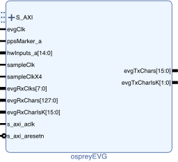

| Name |
Clock |
Description |
| S_AXI |
s_axi_aclk |
AXI4-Lite port. |
| evgClk |
– |
Transmitter clock from
multi-gigabit transceiver. |
| s_axi_aclk |
– |
Clock for AXI4-lite port. |
| ppsMarker_a |
_ |
Pulse-per second marker.
The time stamp seconds are incremented and the time stamp
ticks cleared on the rising edge of this signal.
Asynchronous to evgClk, duration must be at least two
evgClk cycles. |
| hwInputs_a |
evgClk | Hardware inputs capable of driving distributed bus or triggering on either edge a single event or an event sequence. Sampled and synchronized on rising edge of evgClk. Duration of asynchronous input triggers must be at least two evgClk cycles. Distributed bus values are transmitted on every other evgClk |
| s_axi_aresetn |
s_axi_aclk |
Active-low reset input.
Resets all firmware. |
| sampleClk |
– | Sampling clock for round-trip latency measurement. Typically this operates at 156.25 MHz (6.4 ns interval) so one count of the returned value corresponds to a latency of 100 ps. |
| sampleClkX4 |
– | Synchronized to, and four
times the rate, of sampleClk. |
| evgRxClks |
– | Receiver clocks from
multi-gigabit transceivers. |
| evgRxChars |
evgRxClks[i] |
Received characters from multi-gigabit transceivers. |
| evgRxCharIsK |
evgRxClks[i] | Received character status from multi-gigabit transceivers. |
| evgTxChars |
evgClk | Multi-gigabit transceiver
transmit data. Event codes and K28.5 alignment
commas are sent in the most significant eight
bits. Distributed bus and distributed data values
are sent in the least significant eight bits. |
| evgTxCharIsK |
evgClk | Multi-gigabit transceiver transmit data modifiers. |
The event generator firmware configuration is
returned by
int ospreyEVGConfiguration(void);
| Configuration
Register |
|
| Bit(s) |
Description |
| 3–0 | Four bit field holding the
number of hardware trigger inputs. |
| 7–4 |
Four bit field holding the number of timer event sources. |
| 11–8 | Four bit field holding the number of event sequencer banks. |
| 15–12 | Four bit field holding the
number of bits (A)
in each event sequencer pattern memory address. The
number of entries in each sequencer pattern memory is 2A. |
| 19–16 | Four
bit field holding the number of latency measurement
high-speed receivers. |
The status of the event generator is
returned by:
int ospreyEVGStatus(void);
| Event
Generator Control/Status Register |
|
| Bit(s) |
Description |
| 0 | Set when the pulse-per-second marker is valid. |
| 1 | Set when the event generator time stamp seconds are valid. This bit will remain cleared until the pulse-per-second marker is valid and the POSIX seconds have been set. An invalid pulse-per-second marker will clear this bit until the pulse-per-second marker is valid and the POSIX seconds have again been set. |
| 2 | Toggles on rising edge of pulse-per-second marker. |
| 11–4 | Bitmap of armed
sequencers. Bit 0 corresponds to the first
sequencer. |
| 19–12 | Bitmap of triggered sequencers (not yet active because another sequence is still running). Bit 0 corresponds to the first sequencer. |
| 22–20 |
The index (0-based) of the
active, or previously-active, sequencer. |
| 23 |
Set when a sequencer is active. |
The time of day sent by the event generator is
initialized by invoking
int ospreyEVGSetSeconds(uint32_t
posixSeconds);
Once set the seconds value is incremented by each rising
edge of the PPS marker.
The rate at which heartbeat events are generated is
the evgClk divided by the divisor set by invoking
int ospreyEVGSetHeartbeatDivisor(uint32_t
divisor);
The event and rate at which timer-requested events
are generated are set by invoking
int ospreyEVGSetTimerEvent(int
timerIndex, int evCode);
int ospreyEVGSetTimerDivisor(int
timerIndex, uint32_t divisor);
The rate is the evgClk divided by by the
specified divisor. A timerIndex value of 0 corresponds to the
first timer.
Timers are controlled by invoking
int ospreyEVGSetTimerControl(int
timerIndex, uint32_t control);
where the control argument consists of a series
of two bit values with the least significant two bits
corresponding to the first timer, the next most
significant bits to the second timer and so on.
The value of each pair of bits controls its
corresponding timer as described in the following table.
| Value |
Description |
| 0 |
No-op (stopped timer remains
stopped, active timer remains active). |
| 1 |
Stop timer. |
| 2 |
Resume stopped timer. |
| 3 | Load timer with divisor and
start timer. |
Attempts
to (re)start a timer with an invalid or uninitialized
event code or divisor are ignored.
Timer
status is returned by
int ospreyEVGSetTimerControl(void);
where the return value consists of a
series of two bit values with the least significant two
bits corresponding to the first timer, the next most
significant bits to the second timer and so on.
The most significant bit of each pair of bits is the
timer status (0/1, stopped/active). The least significant bit of each pair of
bits is always 0.
The event and rate at which timer-requested events
are generated are set by invoking
int ospreyEVGSetHwTriggerEvent(int
hwTriggerIndex, int edge, int evCode);
The hwTriggerIndex
specifies the hardware trigger input which will send the
specified event code. If edge is 0 the event code will be sent on
the rising edge of the hardware trigger. If edge
is 1 the event code will be sent on the falling edge of
the hardware trigger.
An event code of 0 results in no event being triggered by
the specified input and edge.
An arbitrary event code is transmitted by invoking
int ospreyEVGSendSoftwareEvent(int
index, int evCode);
| Sequencer States |
|
| State | Transitions |
| Idle |
To Armed by writing
a 1 to the corresponding 'Arm' bit in the
control/status register. |
| Armed | To Idle by writing a
1 to the corresponding 'Disarm' bit in the
control/status register. To Triggered on the arrival of a software or hardware trigger. |
| Triggered | To Idle by writing a
1 to the corresponding 'Disarm' bit in the
control/status register. To Active when no sequence is active and no higher priority sequence is in the Triggered state. The transition to the Active state clears the 'Armed' bit in the control/status register. |
| Active | To Idle upon
detection of the 'End of Sequence' event code (255) in
the pattern or when the pattern memory address pointer
wraps around, or by writing a 1 to the 'Cancel' bit in
the control/status register. |
If multiple
event sources make simultaneous requests the event from the
lower priority source will be delayed and emitted at the next
free slot, in most cases. The event source priorities are:
The FEED JSON file fragment for the event generator I/O is produced by the ospreyEVG.py script included with the driver. The script can be invoked from the command line or from another python script as:
import ospreyEVG
ospreyEVG.ospreyEVG_emitJSON(EVG_REG_BASE=1000000, \
timerCount=2, \
hwTriggerCount=8, \
seqBankCount=4, \
seqAddrWidth=11,
rxCount=8)
The
functions described below are wrappers around the functions
mentioned in the previous section to simplify their use in a
FEED driver environment.
int ospreyEVG_FEEDwrite(int
offset, uint32_t value);
uint32_t ospreyEVG_FEEDread(int
offset);
The offset values are relative to the EVG_REG_BASE in the python script, so a typical invocation from a FEED driver for the EVG_REG_BASE shown above might be:
#define REG_EVG_START 1000000
#define REG_EVG_END 1010000
. . .
if ((address >= REG_EVG_START) && (address < REG_EVG_END)) {
return ospreyEVG_FEEDread(address - REG_EVG_START);
}
The
value returned by ospreyEVG_FEEDwrite() is 0 if the offset is that of a
supported register and -1 otherwise.
The EVG:status
and EVG:seqStatus
longin records hold the status and sequencer status
register contents described above.
The rate at which heartbeat events are generated is
the evgClk divided by by the divisor set by the EVG:hbDivisor longout
record.
The rate
at which timer-requested events are generated is
the evgClk divided by by the EVG:TMR:n:divisor longout
records, where n ranges 1
to the number of timers configured in the
firmware. The event code emitted is set by the EVG:TMR:n:event longout
records.
Timers are started, stopped and resumed using the EVG:TMR:control longout record. The status of all timers is in EVG:TMR:status. The semantics of the record values are described in the firmware Timer-requested Events description above.
The event code emitted on the rising or falling edge of the signal at each hardware trigger input is set by the EVG:TRIG:n:rise or EVG:TRIG:n:fall longout records where n ranges from 1 to the number of hardware triggers configured in the firmware. An event code of 0 disables the associated trigger.
An arbitrary event code is transmitted by writing the
code to the EVG:swEvent
longout record.